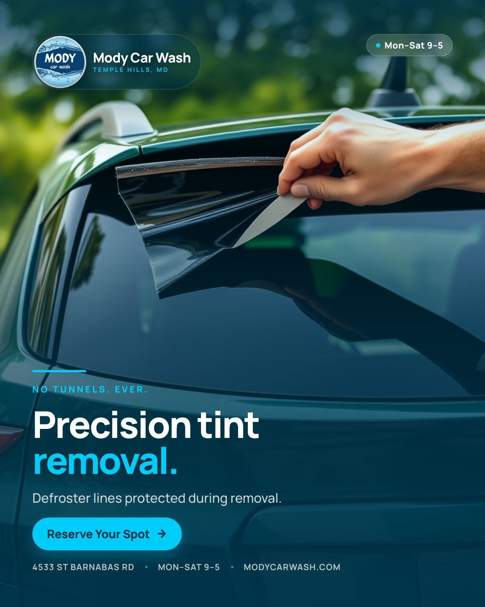
Precision tint removal.
Precision tint removal. Defroster lines protected during removal. Window Tint Removal — Scratch-free removal with precise tools, all adhesive residue cleaned, glass back to factory clear. ✅ Eco-friendly, paint-safe, biodegradable 📍 4533 Saint Barnabas Rd, Temple Hills, MD 20748 🕘 Mon-Sat 9AM-5PM · Closed Sundays 📞 (240) 960-8365 🔗 https://modycarwash.com #Suitland #CarCare #CleanCar #PrinceGeorgesCounty #AutoGlass #CarDetailing #ModyCarWash #AutoDetailing #ClearGlass #WindowTint #PGCounty
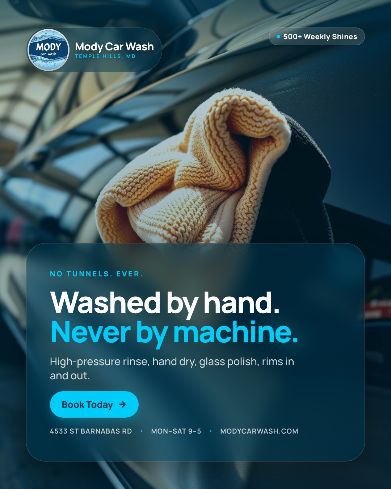
Washed by hand. Never by machine.
Washed by hand. Never by machine. High-pressure rinse, hand dry, glass polish, rims in and out. Mody Exterior — Safe cleaners, high-pressure rinse, scratch-free hand dry, glass polish, rims in and out. ✅ Eco-friendly, paint-safe, biodegradable 📍 4533 Saint Barnabas Rd, Temple Hills, MD 20748 🕘 Mon-Sat 9AM-5PM · Closed Sundays 📞 (240) 960-8365 🔗 https://modycarwash.com #ScratchFree #ShinyCar #CarWash #DetailingLife #TempleHillsMD #CampSprings #PrinceGeorgesCounty #CarCare #CleanCar #ExteriorDetailing #ModyCarWash
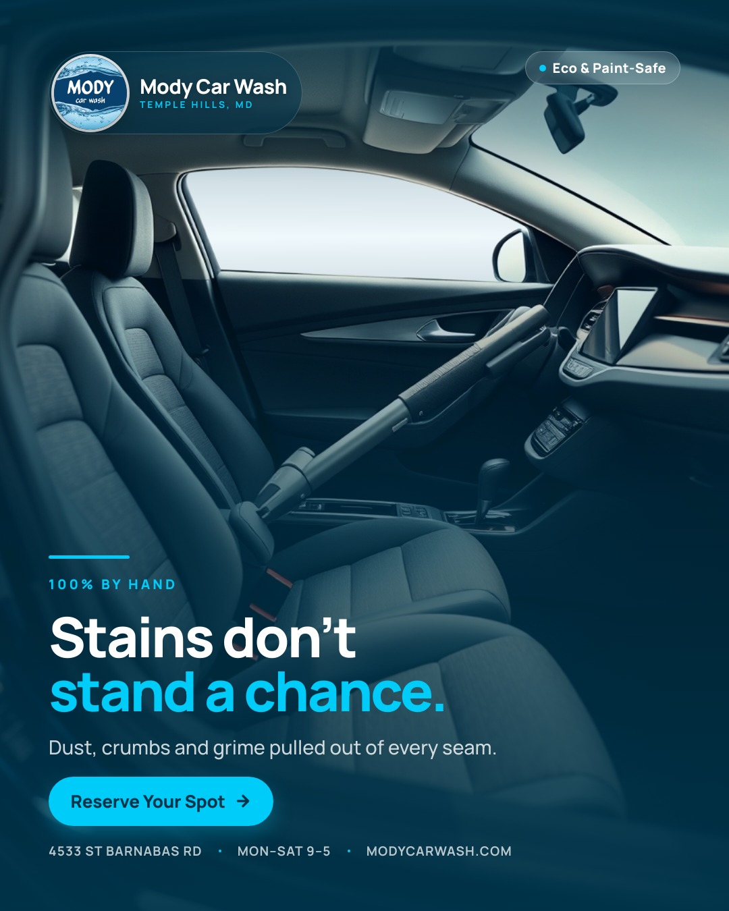
Stains don’t stand a chance.
Stains don’t stand a chance. Dust, crumbs and grime pulled out of every seam. Mody Interior — Deep vacuum for cabin and trunk, dashboard polish, carpet wash, steam stain removal. ✅ 500+ weekly shines 📍 4533 Saint Barnabas Rd, Temple Hills, MD 20748 🕘 Mon-Sat 9AM-5PM · Closed Sundays 📞 (240) 960-8365 🔗 https://modycarwash.com #Suitland #CarInterior #AutoDetailing #CarWash #CarDetailing #OxonHill #CarCare #ModyCarWash #TempleHillsMD #FreshCabin #DeepClean
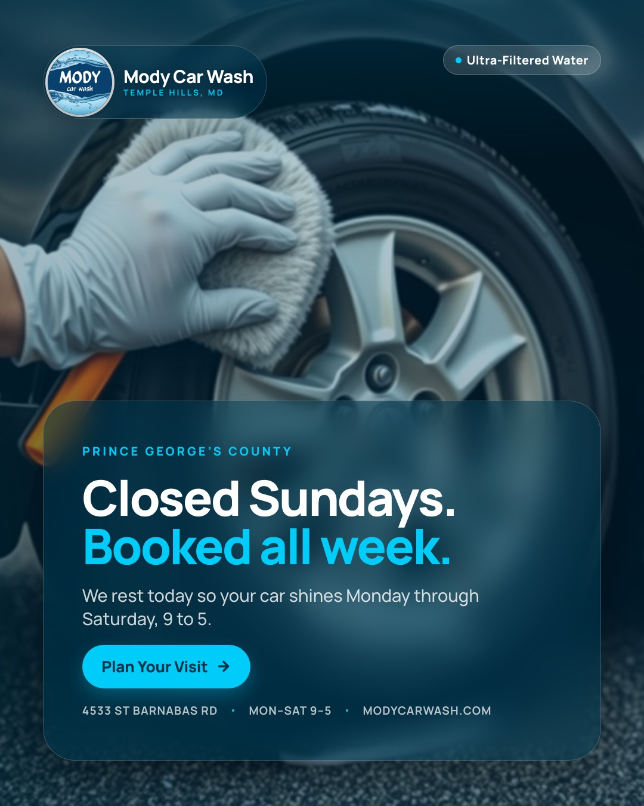
Closed Sundays. Booked all week.
Closed Sundays. Booked all week. We rest today so your car shines Monday through Saturday, 9 to 5. ✅ Ultra-filtered water, zero mineral spots 📍 4533 Saint Barnabas Rd, Temple Hills, MD 20748 🕘 Mon-Sat 9AM-5PM · Closed Sundays 📞 (240) 960-8365 🔗 https://modycarwash.com #ModyCarWash #DetailingLife #OxonHill #PaintCare #HandCarWash #CarWashDay #CarWash #CarDetailing #CampSprings #ExteriorDetailing #DMVCarWash
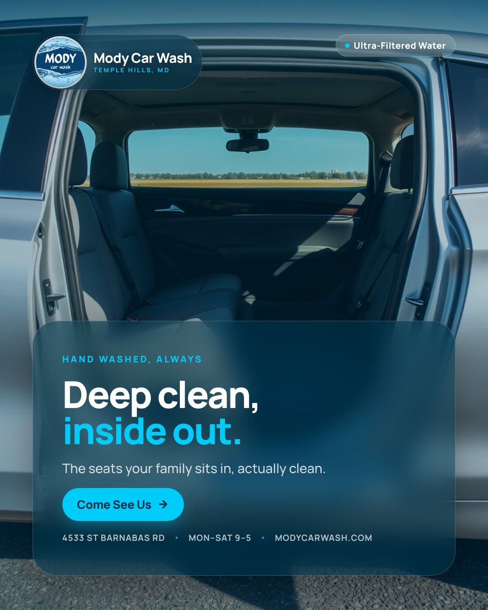
Deep clean, inside out.
Deep clean, inside out. The seats your family sits in, actually clean. Mody Interior — Deep vacuum for cabin and trunk, dashboard polish, carpet wash, steam stain removal. ✅ Grit-guard buckets and soft microfiber 📍 4533 Saint Barnabas Rd, Temple Hills, MD 20748 🕘 Mon-Sat 9AM-5PM · Closed Sundays 📞 (240) 960-8365 🔗 https://modycarwash.com #FreshCabin #CarDetailing #PGCounty #ModyCarWash #CarWash #OxonHill #StainRemoval #InteriorDetailing #PrinceGeorgesCounty #CarCare #HandCarWash
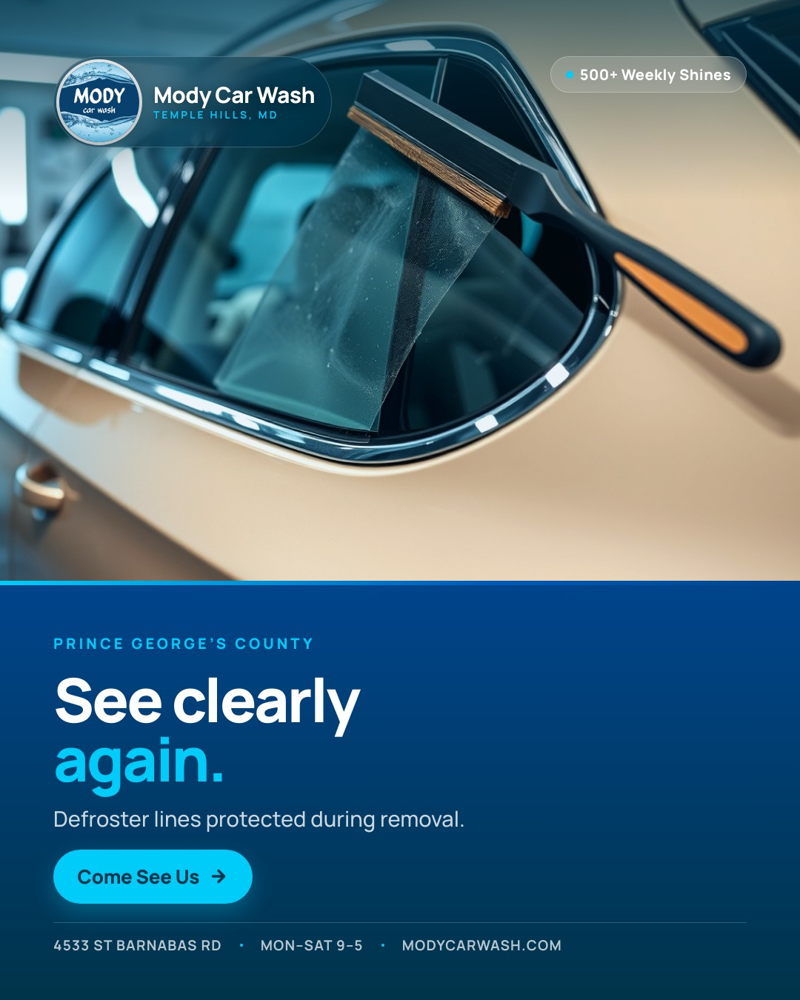
Old film out. Clear glass in.
Old film out. Clear glass in. We remove old, bubbled and purple film safely. Window Tint Removal — Scratch-free removal with precise tools, all adhesive residue cleaned, glass back to factory clear. ✅ Hydrophobic glass treatment 📍 4533 Saint Barnabas Rd, Temple Hills, MD 20748 🕘 Mon-Sat 9AM-5PM · Closed Sundays 📞 (240) 960-8365 🔗 https://modycarwash.com #CarDetailing #CarWash #MarylandCarWash #AutoGlass #TintRemoval #WindowTint #AutoDetailing #HandCarWash #PrinceGeorgesCounty #PGCounty #ModyCarWash
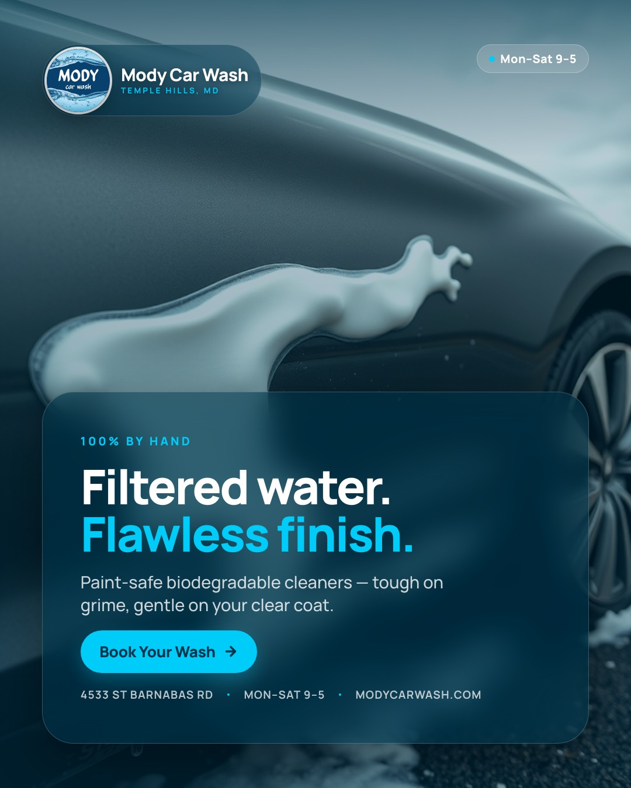
Filtered water. Flawless finish.
Filtered water. Flawless finish. Paint-safe biodegradable cleaners — tough on grime, gentle on your clear coat. Mody Exterior — Safe cleaners, high-pressure rinse, scratch-free hand dry, glass polish, rims in and out. ✅ Hydrophobic glass treatment 📍 4533 Saint Barnabas Rd, Temple Hills, MD 20748 🕘 Mon-Sat 9AM-5PM · Closed Sundays 📞 (240) 960-8365 🔗 https://modycarwash.com #PrinceGeorgesCounty #DMVCarWash #CampSprings #DetailingLife #ExteriorDetailing #CarCare #CarWashDay #ModyCarWash #ScratchFree #HandCarWash #CarDetailing
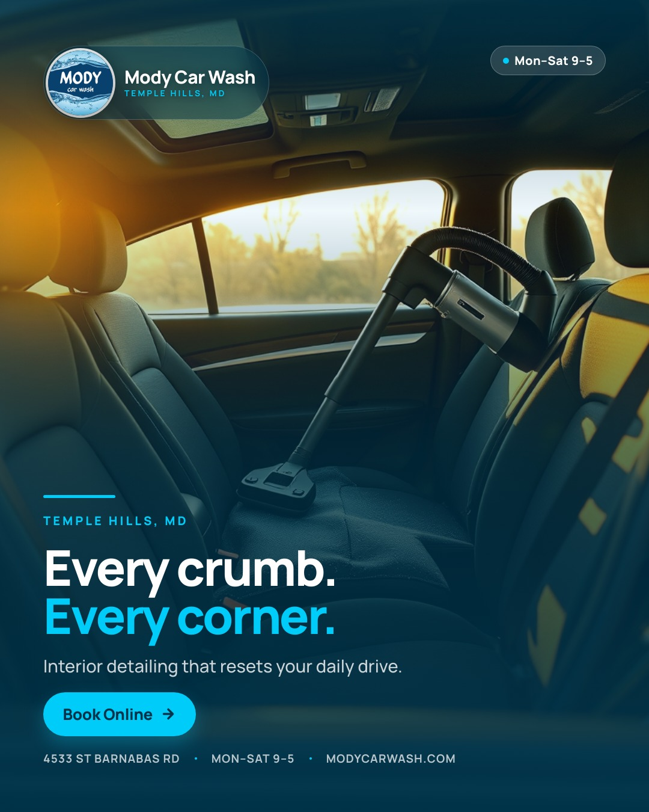
Every crumb. Every corner.
Every crumb. Every corner. Interior detailing that resets your daily drive. Mody Interior — Deep vacuum for cabin and trunk, dashboard polish, carpet wash, steam stain removal. ✅ Grit-guard buckets and soft microfiber 📍 4533 Saint Barnabas Rd, Temple Hills, MD 20748 🕘 Mon-Sat 9AM-5PM · Closed Sundays 📞 (240) 960-8365 🔗 https://modycarwash.com #FreshCabin #TempleHillsMD #CarCare #InteriorDetailing #CarDetailing #MarylandCarWash #CampSprings #StainRemoval #ModyCarWash #CleanCar #HandCarWash
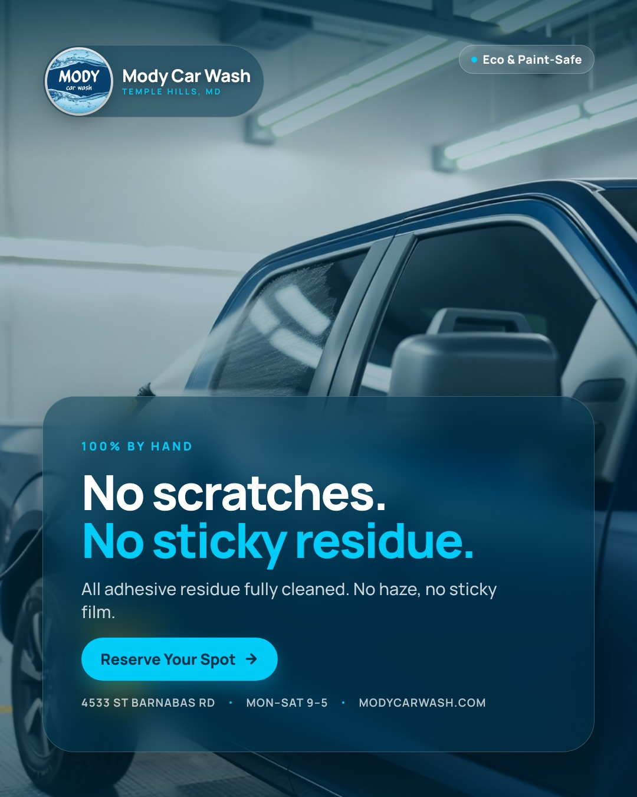
No scratches. No sticky residue.
No scratches. No sticky residue. All adhesive residue fully cleaned. No haze, no sticky film. Window Tint Removal — Scratch-free removal with precise tools, all adhesive residue cleaned, glass back to factory clear. ✅ Grit-guard buckets and soft microfiber 📍 4533 Saint Barnabas Rd, Temple Hills, MD 20748 🕘 Mon-Sat 9AM-5PM · Closed Sundays 📞 (240) 960-8365 🔗 https://modycarwash.com #TintRepair #ModyCarWash #CleanCar #PrinceGeorgesCounty #HandCarWash #ClearGlass #TempleHillsMD #DetailingLife #DMVCarWash #WindowTint #CarWash
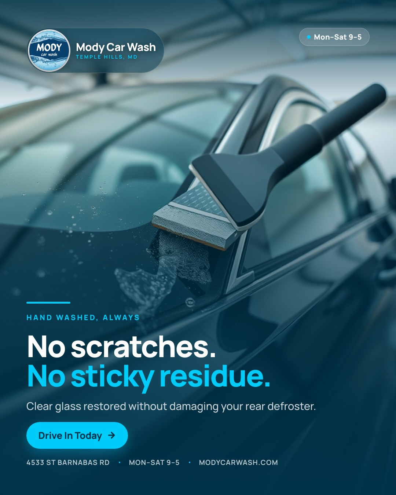
No scratches. No sticky residue.
No scratches. No sticky residue. Clear glass restored without damaging your rear defroster. Window Tint Removal — Scratch-free removal with precise tools, all adhesive residue cleaned, glass back to factory clear. ✅ Grit-guard buckets and soft microfiber 📍 4533 Saint Barnabas Rd, Temple Hills, MD 20748 🕘 Mon-Sat 9AM-5PM · Closed Sundays 📞 (240) 960-8365 🔗 https://modycarwash.com #CleanCar #WindowTint #HandCarWash #TintRemoval #CarCare #AutoGlass #PrinceGeorgesCounty #OxonHill #TempleHillsMD #CarDetailing #ModyCarWash
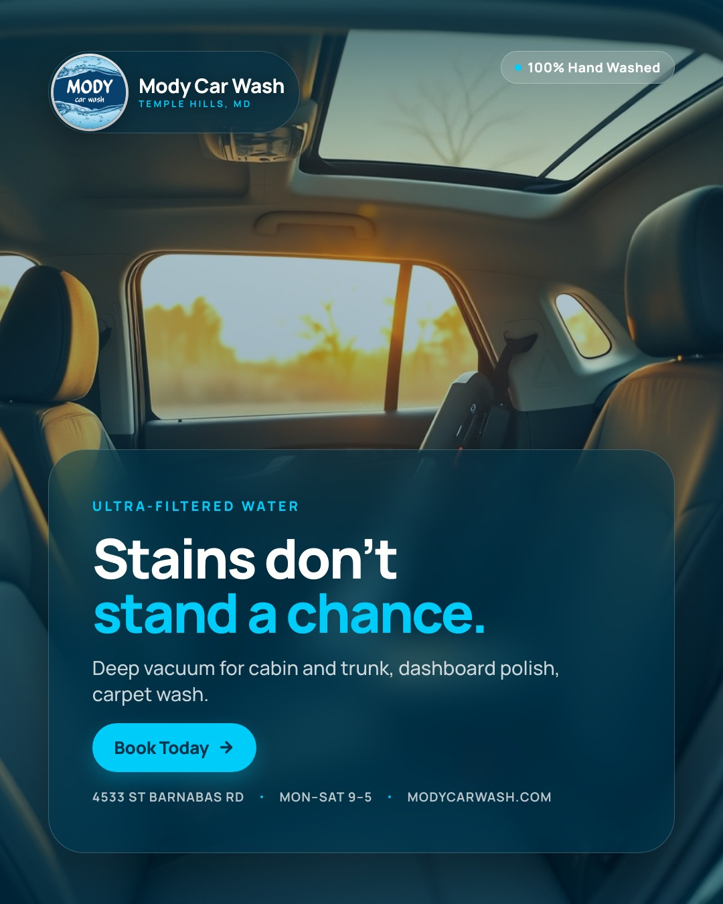
Stains don’t stand a chance.
Stains don’t stand a chance. Deep vacuum for cabin and trunk, dashboard polish, carpet wash. Mody Interior — Deep vacuum for cabin and trunk, dashboard polish, carpet wash, steam stain removal. ✅ Ultra-filtered water, zero mineral spots 📍 4533 Saint Barnabas Rd, Temple Hills, MD 20748 🕘 Mon-Sat 9AM-5PM · Closed Sundays 📞 (240) 960-8365 🔗 https://modycarwash.com #ModyCarWash #PrinceGeorgesCounty #Suitland #FreshCabin #HandCarWash #MarylandCarWash #DetailingLife #InteriorDetailing #CarInterior #AutoDetailing #CleanCar
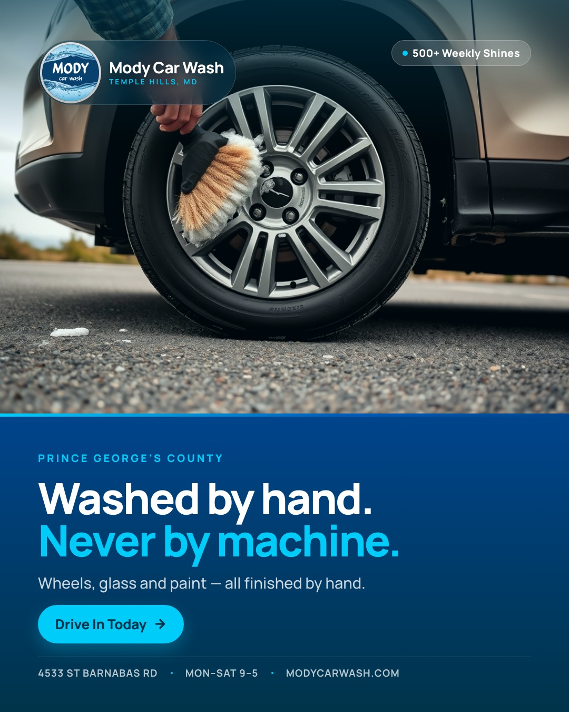
Washed by hand. Never by machine.
Washed by hand. Never by machine. Wheels, glass and paint — all finished by hand. Mody Exterior — Safe cleaners, high-pressure rinse, scratch-free hand dry, glass polish, rims in and out. ✅ Ultra-filtered water, zero mineral spots 📍 4533 Saint Barnabas Rd, Temple Hills, MD 20748 🕘 Mon-Sat 9AM-5PM · Closed Sundays 📞 (240) 960-8365 🔗 https://modycarwash.com #CarWash #ShinyCar #MarylandCarWash #CarDetailing #ModyCarWash #PrinceGeorgesCounty #AutoDetailing #TempleHillsMD #ExteriorDetailing #PaintCare #HandCarWash
Your paint deserves better.
Your paint deserves better. Every panel touched by hand. Never a harsh automatic tunnel. Mody Exterior — Safe cleaners, high-pressure rinse, scratch-free hand dry, glass polish, rims in and out. ✅ Ultra-filtered water, zero mineral spots 📍 4533 Saint Barnabas Rd, Temple Hills, MD 20748 🕘 Mon-Sat 9AM-5PM · Closed Sundays 📞 (240) 960-8365 🔗 https://modycarwash.com #ModyCarWash #TempleHillsMD #PaintCare #Suitland #CarDetailing #DetailingLife #MarylandCarWash #CarWashDay #CleanCar #ShinyCar #AutoDetailing
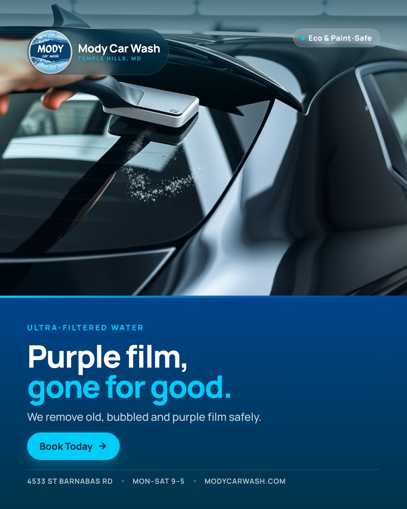
Purple film, gone for good.
Purple film, gone for good. We remove old, bubbled and purple film safely. Window Tint Removal — Scratch-free removal with precise tools, all adhesive residue cleaned, glass back to factory clear. ✅ 500+ weekly shines 📍 4533 Saint Barnabas Rd, Temple Hills, MD 20748 🕘 Mon-Sat 9AM-5PM · Closed Sundays 📞 (240) 960-8365 🔗 https://modycarwash.com #CarDetailing #WindowTint #TempleHillsMD #PrinceGeorgesCounty #OxonHill #TintRepair #CarCare #ClearGlass #ModyCarWash #HandCarWash #AutoDetailing
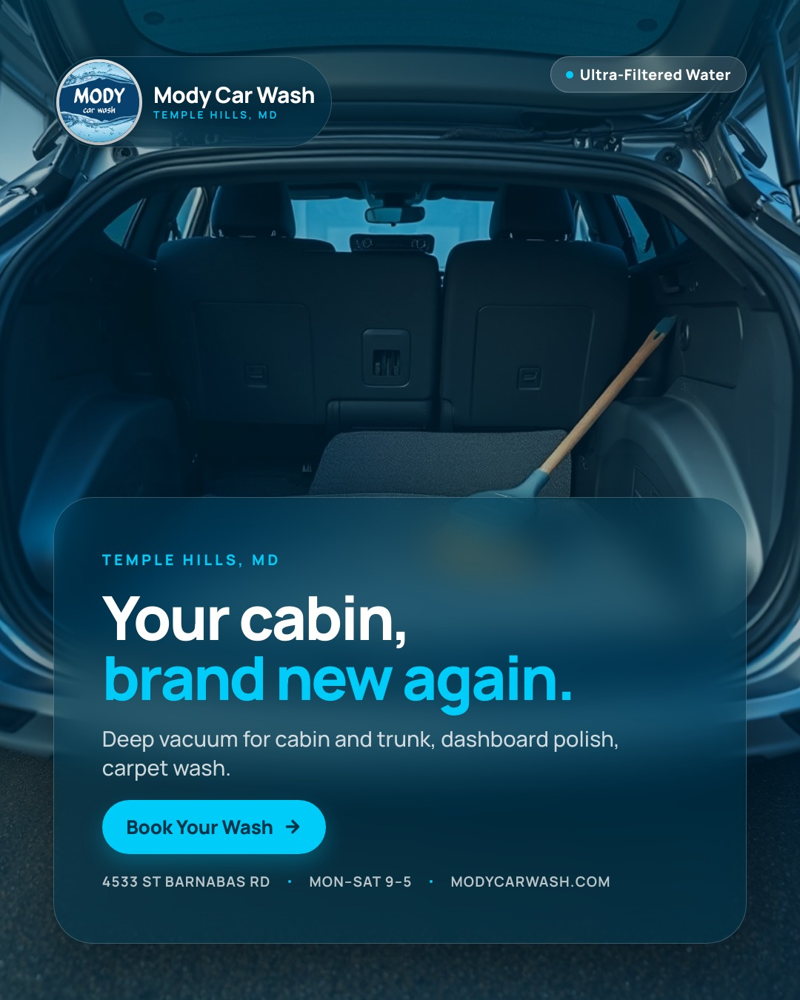
Your cabin, brand new again.
Your cabin, brand new again. Deep vacuum for cabin and trunk, dashboard polish, carpet wash. Mody Interior — Deep vacuum for cabin and trunk, dashboard polish, carpet wash, steam stain removal. ✅ Ultra-filtered water, zero mineral spots 📍 4533 Saint Barnabas Rd, Temple Hills, MD 20748 🕘 Mon-Sat 9AM-5PM · Closed Sundays 📞 (240) 960-8365 🔗 https://modycarwash.com #ModyCarWash #PrinceGeorgesCounty #CarDetailing #CarWash #DetailingLife #CarInterior #PGCounty #StainRemoval #CampSprings #HandCarWash #FreshCabin
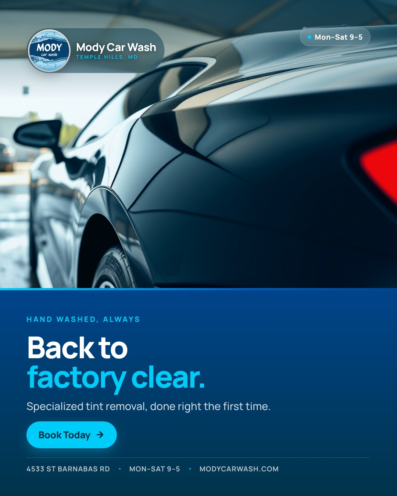
Bubbling tint? We remove it clean.
Bubbling tint? We remove it clean. Clear glass restored without damaging your rear defroster. Window Tint Removal — Scratch-free removal with precise tools, all adhesive residue cleaned, glass back to factory clear. ✅ Ultra-filtered water, zero mineral spots 📍 4533 Saint Barnabas Rd, Temple Hills, MD 20748 🕘 Mon-Sat 9AM-5PM · Closed Sundays 📞 (240) 960-8365 🔗 https://modycarwash.com #MarylandCarWash #ModyCarWash #CleanCar #AutoDetailing #CarWash #DetailingLife #PrinceGeorgesCounty #ClearGlass #TintRepair #CampSprings #TintRemoval
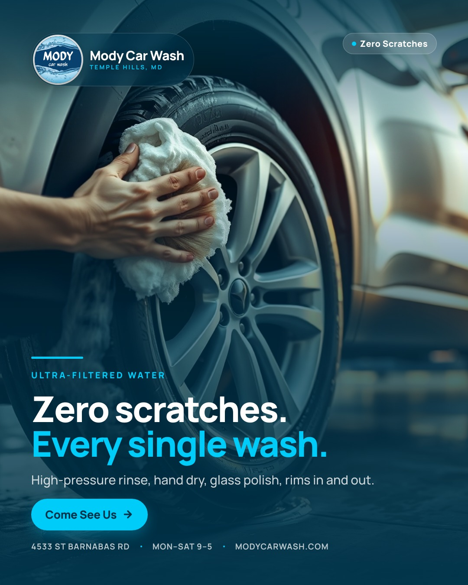
Zero scratches. Every single wash.
Zero scratches. Every single wash. High-pressure rinse, hand dry, glass polish, rims in and out. Mody Exterior — Safe cleaners, high-pressure rinse, scratch-free hand dry, glass polish, rims in and out. ✅ Ultra-filtered water, zero mineral spots 📍 4533 Saint Barnabas Rd, Temple Hills, MD 20748 🕘 Mon-Sat 9AM-5PM · Closed Sundays 📞 (240) 960-8365 🔗 https://modycarwash.com #CarWashDay #ExteriorDetailing #CarCare #CampSprings #PGCounty #ModyCarWash #OxonHill #ShinyCar #CarWash #AutoDetailing #DetailingLife
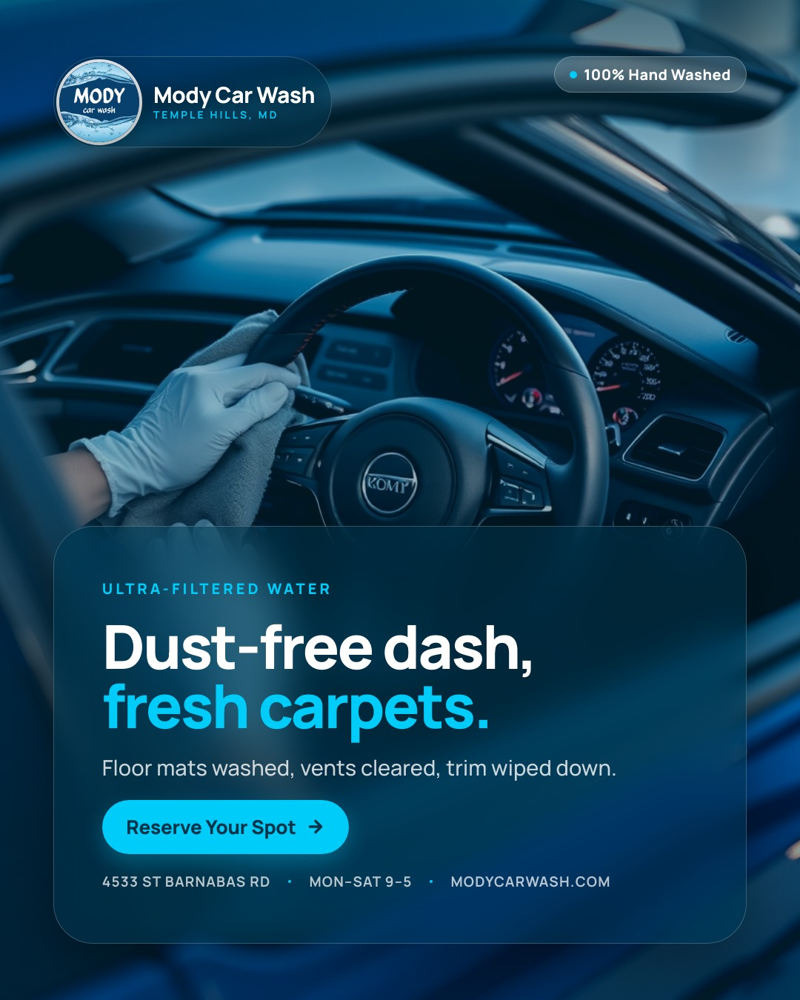
Dust-free dash, fresh carpets.
Dust-free dash, fresh carpets. Floor mats washed, vents cleared, trim wiped down. Mody Interior — Deep vacuum for cabin and trunk, dashboard polish, carpet wash, steam stain removal. ✅ Hydrophobic glass treatment 📍 4533 Saint Barnabas Rd, Temple Hills, MD 20748 🕘 Mon-Sat 9AM-5PM · Closed Sundays 📞 (240) 960-8365 🔗 https://modycarwash.com #PGCounty #StainRemoval #FreshCabin #Suitland #CleanCar #AutoDetailing #HandCarWash #MarylandCarWash #ModyCarWash #CarWash #CarInterior